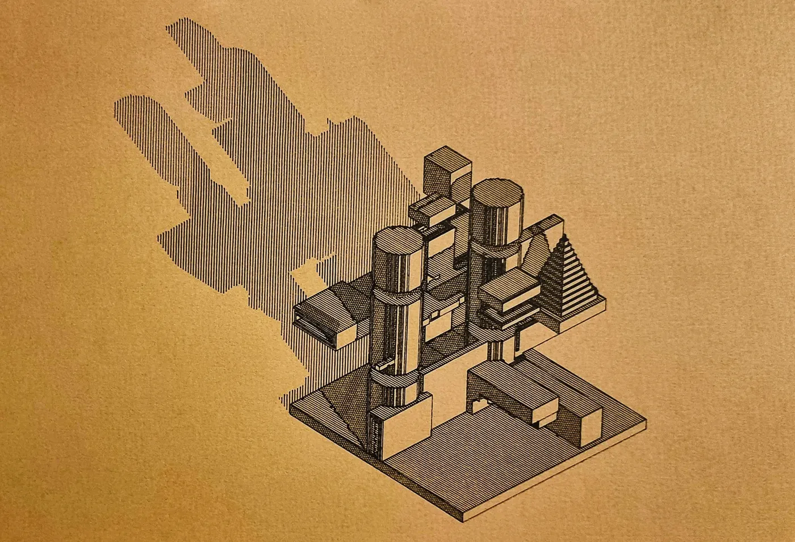
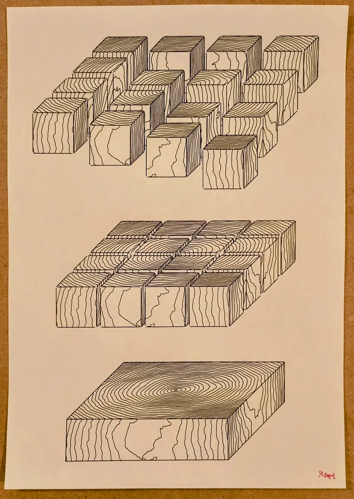
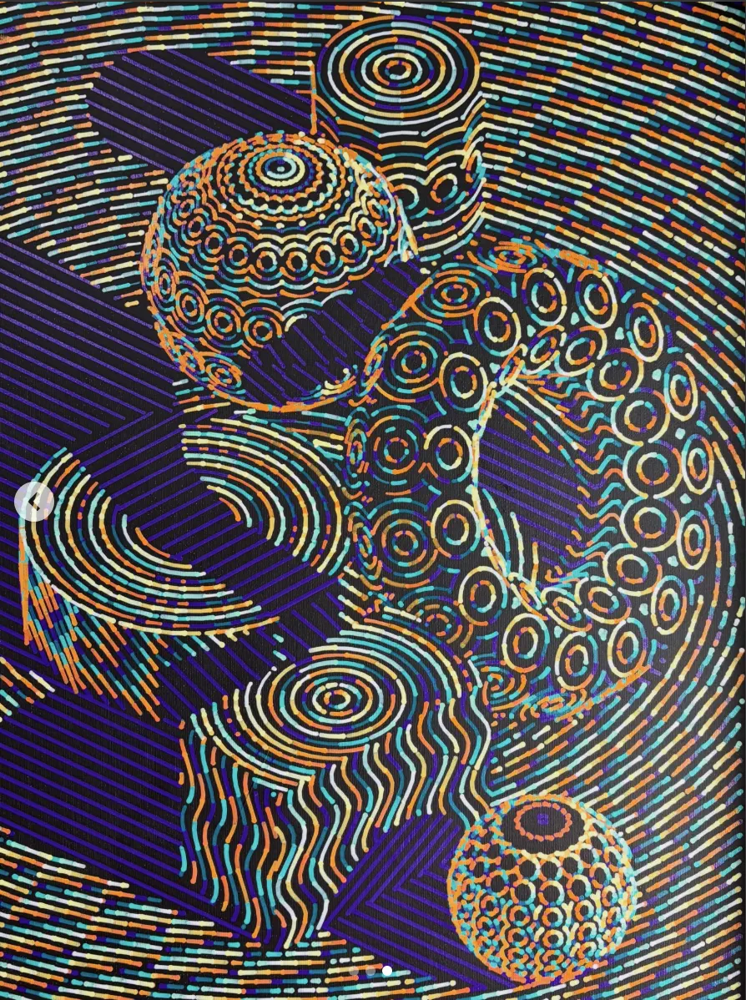
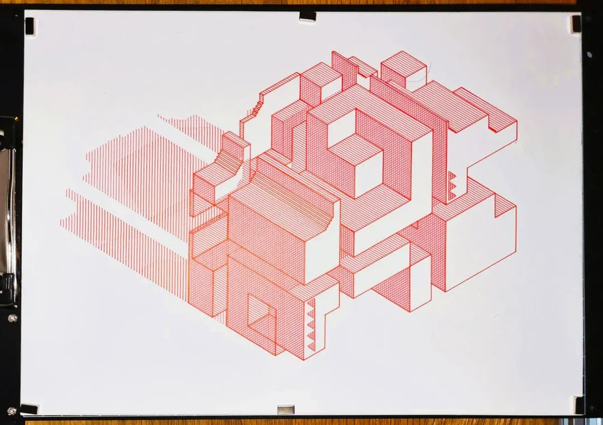
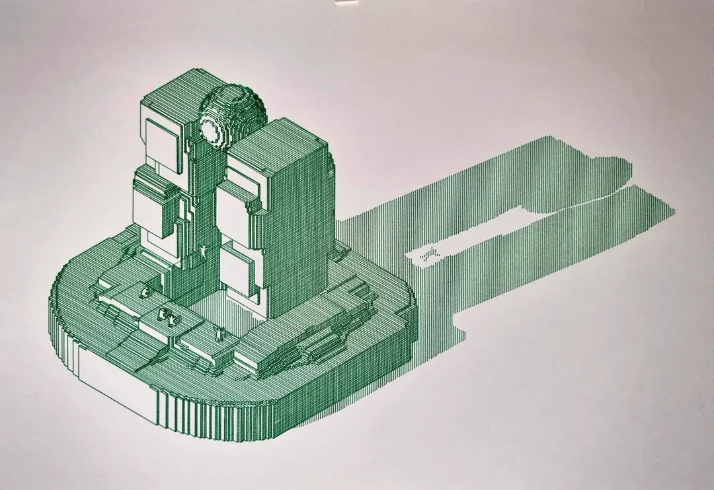
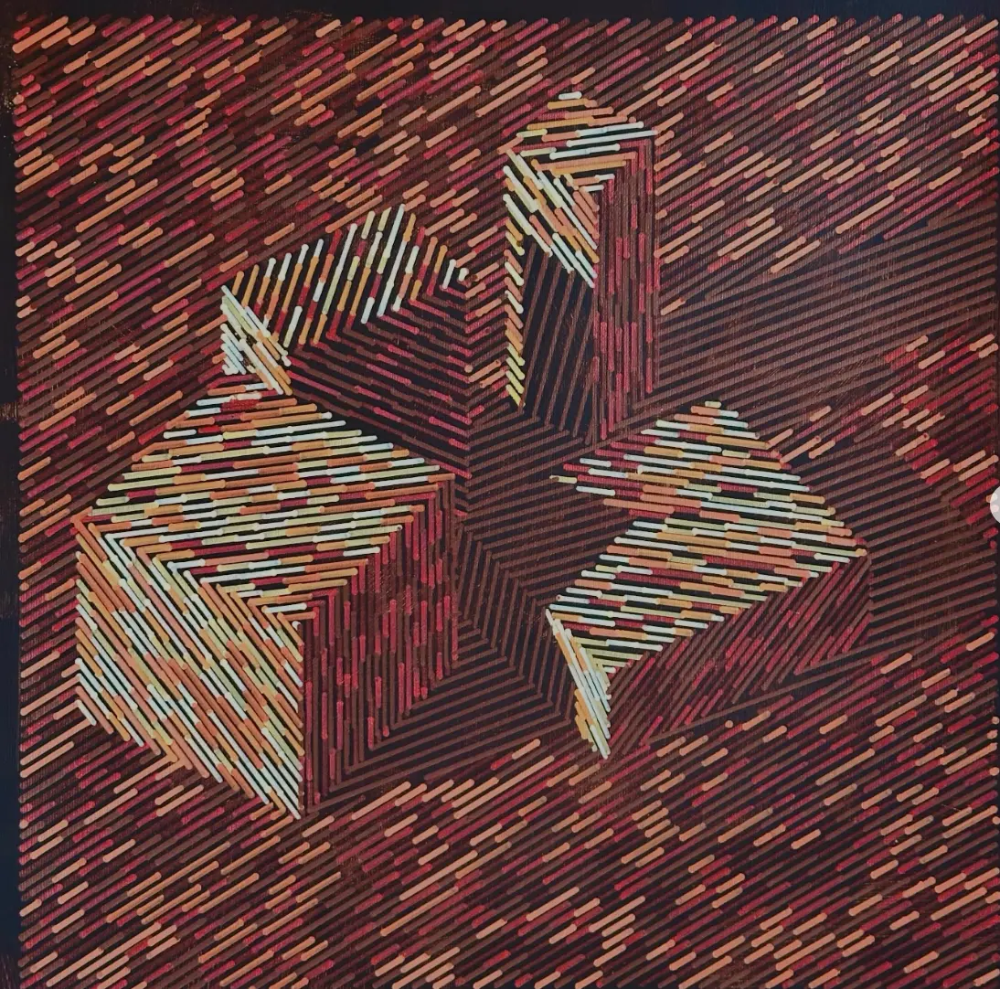

One scene, many objects
Add primitives, duplicate instances, import STL first, and later preserve OBJ/glTF groups, cameras, and lights. Objects share one camera and one cross-object visibility model.
Product proposal · July 2026
Build or import a 3D scene, then turn surfaces, light, shadow, depth, reflection, gaps, and pens into editable line systems—without rebuilding the geometry for every idea.
Executive summary
Vectura already contains valuable 3D pieces, but they are divided across single-object algorithms. The opportunity is to separate what the object is from how its surfaces, lighting fields, and strokes become ink.
Add primitives, duplicate instances, import STL first, and later preserve OBJ/glTF groups, cameras, and lights. Objects share one camera and one cross-object visibility model.
A torus can combine contours, a thick silhouette, a purple shadow hatch, ring highlights, dashed hidden lines, and four alternating pens—each as an ordered, reusable Ink Pass.
Apply a style to an object, selected faces, all upward faces across several objects, every cast shadow, or the glint band of one light. The target is always explicit.
Do not attempt a full 3D modeler or physically based renderer. Build a plotter-native scene compiler: enough geometry, topology, lighting, and visibility to generate expressive vectors with provenance. “If they can think it, they can plot it” comes from composable targeting and line treatment—not from recreating Blender in a browser.
Changing Spiral → Facets → Contours must not discard the object, camera, light, or selection sets.
Shadow, highlight, glint, diffuse tone, depth, and reflection become inputs that line systems can add, remove, spread, break, or recolor.
Plotter gaps and pen alternation must create actual path fragments in millimeters, not merely CSS-like dash decoration.
Grounded in the current product
The live app and source review confirm that this is not greenfield. They also confirm that visible controls cannot be assumed to equal dependable capability.
Contours are a strong reusable strategy. In the live default, switching to wireframe produced roughly 30,000 paths / 57 m of plotting and visually saturated the sphere; Lambert hatching became difficult to read over the dense base.
Face bands, edges, vertices, hidden-face treatment, creases, and hatching already express the right vocabulary. The limitation is scope: the whole algorithm layer owns the mesh and the style.
The curated helix is compelling. An ad-hoc switch from Helix to Torus retained the wrap parameters and yielded a sparse, unexpected result—evidence that a source swap is not yet a coherent “look swap.”
The June 3D audit documented silent no-ops and inconsistent applicability. Several controls were subsequently gated or repaired. The lesson is architectural: capability metadata and visual regression checks must remain first-class.






Experience model
The document Layers panel should contain one manageable 3D Scene layer. Double-clicking it enters an internal subdocument with its own compact outliner for cameras, lights, objects, selection sets, Plot Styles, and Looks. The compiler still renders the entire scene together so shadows and occlusion cross object boundaries.
Primitive, imported mesh, procedural surface, instances, transforms.
Object, face set, edge set, semantic query, lighting region.
Always, shadow, highlight, facing, depth, curvature, Noise Rack field.
Add hatch/rings/contours or modify spacing, gaps, weight, pen.
Physical fragments, pen order, travel, minimum marks, SVG.
V.A then 3 for faces.Detailed requirements
The beta is successful when users can compose a modest multi-object scene, target meaningful surfaces, map lighting to line behavior, alternate pens with real gaps, and export deterministic plotter-ready SVG.
| ID | Requirement | Acceptance signal | Stage |
|---|---|---|---|
| SCE-01 | A document may contain a 3D Scene layer whose internal subdocument owns multiple mesh objects, lights, one active camera, selection sets, Plot Styles, and Looks. | The outer document stays manageable; entering/exiting the Scene is explicit and undoable. | Alpha |
| SCE-02 | The scene compiler must evaluate all visible objects together before flattening to 2D paths. | Object A can occlude, shadow, or project a styled reflection field onto Object B. | Alpha |
| SCE-03 | Primitive sources: sphere, torus, box, cone, cylinder, capsule, ellipsoid, pyramid, superellipsoid, torus knot, and Polyhedron solids. | Sources reuse extracted Topoform/Polyhedron builders with visual parity tests. | Alpha |
| SCE-04 | Import STL in alpha. Add OBJ next. Evaluate glTF/GLB only with an explicit dependency, hierarchy, and load-size decision. | Import sheet exposes units, up axis, centering, normals, weld, and preview simplification. | Alpha → Later |
| SCE-05 | Meshes live in an immutable scene asset table; object nodes reference assetId and may instance shared geometry. | Duplicating ten objects does not clone the mesh ten times through undo snapshots. | Alpha |
| SCE-06 | Object transforms, visibility, lock, duplicate, group, cast/receive shadow, and cast/receive reflected-light flags are independent. | Changing a transform invalidates only affected projection, lighting, and visibility caches. | Alpha |
| SCE-07 | Camera supports orthographic and perspective projection plus existing X/Y/Z rotation-gizmo behavior. | Existing 3D camera vocabulary is normalized internally without breaking old preset adapters. | Alpha |
| SCE-08 | All stochastic sampling, light samples, selection queries, and pen sequences are deterministic. | Same scene, seed, and version produce the same path signatures and SVG. | Alpha |
| ID | Requirement | Acceptance signal | Stage |
|---|---|---|---|
| SEL-01 | V selects objects, groups, and lights inside Scene edit mode while preserving ordinary Vectura selection outside it. | Selection is available both in the viewport and internal outliner. | Alpha |
| SEL-02 | A enters Scene Component Select; pressing it again cycles Vertex → Edge → Face. Direct shortcuts: 1 vertex, 2 edge, 3 face. | The toolbar and status bar always show the active submode, e.g. A · Face. | Alpha |
| SEL-03 | Shift adds/toggles; Alt/Option subtracts; double-click selects a connected island; X-Ray temporarily permits hidden-component selection. | Component hit testing uses stable 3D IDs, not flattened 2D path anchors. | Alpha |
| SEL-04 | Users can save exact Static Sets and live Smart Sets. | Smart predicates include Facing Up, Facing Camera, Same Normal, Coplanar, Connected, Same Source Material, Same Light Band, and Shadowed By. | Beta |
| SEL-05 | Selection sets may span objects. | “All upward faces of all blocks” behaves as one reusable target. | Beta |
| SEL-06 | The editor overlays plot lines on a faint, non-exporting work mesh. | Preview modes: Ink, Mesh + Ink, Lighting Masks, and Pen Order. | Alpha |
| SEL-07 | Topology changes must preserve semantic sets, remap explicit IDs when possible, and surface unresolved assignments. | No silent style loss when an import is repaired or a source-detail parameter changes. | Beta |
| ID | Requirement | Acceptance signal | Stage |
|---|---|---|---|
| STY-01 | A reusable Plot Style is an ordered stack of Ink Passes, not a single render-mode enum. | Passes can be reordered, hidden, duplicated, copied, linked, or made unique. | Alpha |
| STY-02 | Every pass exposes the same sentence: Target → Driver → Action → Pen. | A collapsed card reads like “Shadow · Hatch 45° · 2 mm · Purple.” | Beta |
| STY-03 | Actions divide into Add strokes and Modify existing strokes. | Highlights can add rings or open gaps/increase spacing in the base surface lines. | Beta |
| STY-04 | Add-stroke strategies include wireframe, silhouette, crease, contour, face band, hatch, crosshatch, spiral wrap, concentric rings, radial, stipple, Pattern, Topo, and Wavetable adapters. | Alpha ships the first six; later strategies use capability metadata and shared samplers. | Alpha → Later |
| STY-05 | Modify-existing actions include increase/reduce spacing, break/open gaps, shorten, suppress, thicken, thin, swap pen, jitter, and warp. | Modifiers operate on stroke samples before final 2D export. | Beta |
| STY-06 | Mapping continuity options: Per Face, Connected Island, Across Selection, and World. | Wood-block top fields can restart per block or continue across all selected tops. | Beta |
| STY-07 | Style precedence is explicit: Scene default → object → selection set → exact component → lighting-state override. | The Inspector distinguishes inherited, linked, and overridden values. | Beta |
| STY-08 | Pass combination modes: Add, Knockout, Interleave, Replace. | Conflicts are visible and deterministic; no implicit raster-style blending. | Beta |
| STY-09 | All noise modulation uses the shared Noise Rack evaluator. | No algorithm-specific or Scene-specific noise stack is introduced. | Later |
| ID | Requirement | Acceptance signal | Stage |
|---|---|---|---|
| LGT-01 | Lights are selectable scene objects. Alpha supports Directional, Point, and Spot. | Each has intensity, position/direction, range/cone, cast shadows, affect/exclude sets, and viewport gizmos. | Alpha → Beta |
| LGT-02 | Lighting evaluation produces named scalar fields: diffuse, shadow, specular, facing/rim, depth, and optional reflected light. | Line recipes consume fields without depending on a raster material preview. | Beta |
| LGT-03 | Users can edit five tonal bands: Deep Shadow, Shadow, Midtone, Highlight, Glint. | Each band can target an Ink Pass with adjustable threshold and feather. | Beta |
| LGT-04 | Hard cast shadows must clip to receiver objects and remain independently styleable. | A shadow can render as purple 45° hatch with a true 2 mm gap. | Beta |
| LGT-05 | Highlights and glints can add strokes or modify the base surface system. | Ring highlight and “increase base spacing by 35%” both work. | Beta |
| LGT-06 | Objects expose Matte, Satin, Gloss, and Mirror response presets that tune field generation—not raster color. | The mapping remains understandable as plotter behavior. | Later |
| LGT-07 | Reflected light onto surrounding objects begins as a clearly labeled, stylized one-bounce projected field. | The product does not imply full caustics/global illumination in beta. | Later |
| LGT-08 | Area/environment lights and soft shadows are deferred until hard-shadow performance and semantics are stable. | Softness uses deterministic bounded samples and quality scaling. | Later |
| ID | Requirement | Acceptance signal | Stage |
|---|---|---|---|
| PEN-01 | Stroke segmentation works by physical arc length and emits real pen-up gaps. | SVG contains separate path fragments; gap size is stable in document millimeters. | Beta |
| PEN-02 | Pen Cycle supports assignment by Stroke, Segment, Face, Light Band, and seeded Random. | Ordered pen chips support Forward, Ping-Pong, and Shuffle sequences. | Beta |
| PEN-03 | Phase scope supports Per Stroke, Per Object, Across Selection, and Global. | Color rhythms can align continuously across many objects. | Beta |
| PEN-04 | Minimum segment, minimum gap, join-across-corners, and preserve-continuous-path controls prevent unplottable fragments. | Warnings explain how many fragments violate the active machine profile. | Beta |
| PEN-05 | One canonical effective-pen resolver must serve renderer, stats, line sort, optimization, dedupe, plot preview, and SVG grouping. | Paths with meta.penId are never deduped or sorted across pen boundaries. | Alpha gate |
| PEN-06 | Path provenance survives through visibility, segmentation, optimization, and export. | Every output fragment can be traced to scene/object/face/style/pass/pen. | Alpha |
| PEN-07 | The Plot view reports paths, pen changes, distance, estimated time, tiny fragments, and travel. | The user can preview Pen Order before export. | Beta |
| PEN-08 | Scene output is ordinary Vectura paths and remains compatible with document masks, margin clipping, and SVG export. | External Mirror/Mask semantics are documented; Scene children are not exported twice. | Alpha |
| ID | Requirement | Acceptance signal | Stage |
|---|---|---|---|
| SYS-01 | Draft, Balanced, and High reuse Vectura’s existing 3D preview-quality preference. | Quality lowers preview detail/samples only; committed export always honors final settings. | Alpha |
| SYS-02 | Recommended beta budget: 5 objects, ~25k triangles, 1 shadow light, and 10k emitted paths. | Balanced interaction p95 <150 ms; full generation <1.5 s; export <3 s on reference hardware. | Beta |
| SYS-03 | Complexity is never silently dropped. | The UI warns, offers preview LOD, and reports expected path growth before a 30k-path wireframe surprise. | Alpha |
| SYS-04 | Scene persistence uses an explicit schema version and engine-state migration. | VECTURA_FORMAT_VERSION and docs/vectura-format.md update together. | Alpha |
| SYS-05 | Undo uses structural sharing for immutable assets and bounded cache state. | Large imports do not multiply memory at every edit. | Alpha |
| SYS-06 | Every visible control must be applicable and visually verified. | Inapplicable controls are hidden; no control ships merely because a legacy algorithm exposed it. | All |
| SYS-07 | Keyboard, pointer, and touch flows have equivalent access. Radial controls are accelerators, never the only route. | Native focus, labels, mixed-selection states, and non-color selection cues are tested. | Beta |
| SYS-08 | Spiralizer, Polyhedron, Topoform, and Raster-Plane remain loadable as compatibility algorithms. | No automatic rewrite on file open; conversion is explicit and undoable. | Later |
| SYS-09 | A legacy algorithm leaves the Add menu only after factory state, curated presets, visual output, export, help, and file migration reach parity. | Loading support remains for at least two release cycles after de-emphasis. | Later |
Recommended system shape
The outer layer is one drawable. Internal nodes remain selectable/editable, but the compiler owns cross-object occlusion, lighting, and plot order.
Immutable meshes, topology, groups, bounds, import provenance, preview/final LODs.
Object/light/camera transforms and visibility; instances reference assets.
Stable face/edge IDs, adjacency, semantic queries, ray picking, connected islands.
Diffuse, shadow, specular, facing, depth, and later stylized reflected light.
Wireframe, contour, hatch, spiral-wrap, Pattern, Topo, Wavetable, and modifiers.
Physical segmentation, gaps, minimum marks, deterministic pen assignment.
Global opaque/ghost/x-ray rules and scene-wide hidden-line clipping.
Scene, object, face, edge, semantic, style, pass, pen, source-stroke IDs.
Geometry3D math/projection, silhouettes, creases, depth-buffer occlusion, Lambert hatch, preview-quality scaling, STL parsing, 3D gizmo, path metadata, pattern-fill clipping, Noise Rack.
Topoform primitive builders and contours; Polyhedron solids, face bands, edges, and effects; Spiralizer analytic surfaces and wraps; Raster-Plane/Terrain heightfields.
Scene schema/assets, topology IDs, internal outliner, component picking, selection queries, cross-object light fields, style cascade, stroke segmentation, canonical effective-pen routing.
Parallel implementation plan
Four workstreams can proceed in parallel after Phase 0 freezes the shared contracts. The estimates are planning ranges, not release commitments.
2–3 weeks · blocks implementation
4–6 weeks · vertical slice
5–7 weeks · core product value
4–8+ weeks · gated by evidence
Every surfaced control changes a reviewed output under a representative scene. Dense output cannot conceal a nominal effect.
Pen groups, physical gaps, stats, optimization, reveal order, and SVG agree on the same effective path pen.
Historical layers and presets remain loadable; conversion is explicit; schema migrations are versioned and tested.
Prefer semantic Smart Sets; preserve provenance; warn on orphaned exact IDs.
Repair sheet, preview/final LODs, planar/triplanar fallbacks, complexity warnings.
Keep Scene selection/overlays in dedicated controllers instead of growing renderer.js.
Immutable asset references and structural sharing; do not embed repeated meshes in object params.
Separate on-object specular from a clearly labeled stylized projected reflection field.
Targeted dependency caches, visible path estimates, recommended-scene budgets, no silent dropping.
Small interactive sketches
These sketches pitch the mental model: geometry/look independence, surface continuity, and lighting-as-ink. They intentionally avoid simulating the full editor.
Same geometry and view; only the strategy changes.
Toggle how one surface strategy maps across a selection set.
Move a light, then decide how its shadow and highlight become strokes.
Decision requested
The right next step is not a feature sprint. It is a short contract-and-parity phase that proves the data model, effective-pen pipeline, visual truth of reusable 3D capabilities, and the Scene Studio interaction model.